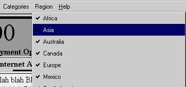
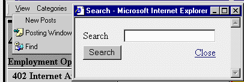

|
| ||
|
| ||
Wayne Berry
Editor, 15 Seconds
Contents
Introduction
Welcome Screen
Main Page
Navigation Bar
Regions and Categories
Columns
New Ads
New Postings
Removing Postings
Search
Database Design
Summary
This article describes the technical design and development of the components that make up the 15 Seconds Job Classifieds site. I'll discuss the functionality, the JScript™, Visual Basic® Scripting Edition (VBScript), Active Server Pages (ASP), Dynamic HTML (DHTML), and the database design used for the functioning Web site. The downloadable classifieds site code is thoroughly commented so you can easily find the algorithms and functions described here. This documentation along with the installation documentation provide what you need to download, install, and customize the classifieds site code for your own use. For an overview of site features, see 15 Seconds Job Classifieds Site Features.
When users first enter the site, they are presented with a welcome screen that displays the welcome text, located in welcome_text.asp, and are asked to choose a region for which they want to see ads. If they have a browser that supports DHTML, they are presented with a modal dialog box that freezes the underlying screen until they choose a region. If they are not able to run DHTML they are redirected to html_welcome.asp, and once they have selected a region they go back the main ad page, default.asp.
The Modal dialog box is created with the following statement that appears in popup_jscript.asp.
The XSession component is used to store a flag indicating whether they have seen the welcome page. XSession is a hybrid of the Session object, storing a name value pair for a user on the hard drive.
Selecting a region from the welcome screen is an important start to a user's interaction with the site. Without the ability to select a region, the user would be presented with all ads -- a selection that would appear too large for an introductory page.
The classifieds site has only one page, which always displays the same layout. However, the ads displayed within the layout of this main page change according to the user's selection of categories and regions. Other pages appear in pop-up windows from the main page; however, the user's primary view is of the main page.
Default.asp contains the layout of the site. It dictates which arrangement of ads to display based on user input, by calling the correct column function in columns.asp. It also determines which browser the user has and fills in the correct navigation bar depending on whether that browser supports DHTML. It also displays the header and footer, and the outside table.
Three pages display as pop-up windows: ad.asp, newpost.asp, and popup_search.asp.
ad.asp
Displays the contact information for a particular advertisement. The user gets this window if they click the ad from default.asp. Removing the contact information from the description makes for a cleaner appearance on the main page. It also enables the user to print just that window, with just the ad that interests them. Secondly, the pop-up window prevents crawlers from traversing the Web site and gathering e-mail addresses for bulk e-mail purposes.
newpost.asp
Enables the user to post an advertisement. The user can get this window from the View drop-down menu. See the section on posting new ads in this article.
popup_search.asp
Enables the user to search the classifieds for particular keywords in the description or the title. Unlike the other windows, searching directly affects default.asp. Default.asp is refreshed with the results of the search.
By clicking the Active Desktop™ image at the bottom of the page, Internet Explorer 4.0 users can add a "Job of the Day" Desktop item to their desktop. This Desktop item reloads to display a new job every night. To create an Active desktop item, we create a channel definition file (CDF) called activedesktop.cdx and a Web page to display within it called activedesktop.asp.
activedesktop.cdx
A dynamic channel file that substitutes the Web site name into the XML. A CDX file is the same as a CDF file, except that a CDX file is processed by the Active Server the same as an ASP file.
activedesktop.asp
Displays a new job every day by selecting a random job from the database. Only jobs within the user's selected regions are displayed for that user.
Besides default.asp, the Active desktop files, and the pages used for pop-up windows, there are several included files. Included files enable the programmer to change a setting or code on one page, and have it affect all the pages that include that file.
For security reasons, these pages have been given .asp extensions. For example, sql.asp contains the log on and password to the SQL Server membership database that the site uses. We have included this page from every other page, enabling us to change the password in one spot while affecting all the pages. If a request is made for sql.asp, a blank page will be returned, because all it does is set some server-side constants. However, if we named the page sql.inc, requesting the page would display the password to the SQL Server. The difference is that the Active Server interrupts .asp pages, and .inc pages are just served as text. For this reason we have used the .asp extension with all the pages we include.
These pages are never called directly, but are included:
ad_display.asp
Displays the advertising information in a uniform manner, including the contact information. This file is included from both done.asp and ad.asp.
ad_read.asp
Reads the advertising information from the database. This file is included from both done.asp and ad.asp.
css.asp
Contains all the cascading style sheets (CSS).
popup_jscript.asp
Contains all the client-side JScript that deals with the pop-up windows.
sql.asp
Contains the SQL Server DNS, log on, and password.
global.asp
Different than global.asa. Contains all the global variables used to configure the site. Changing variables in this file will change the look and feel of the site.
columns.asp
Contains functions and subroutines for displaying the columns of ads. These functions and subroutines are called from default.asp according to the configuration of ads to be displayed. For more information, see Columns.
dhtml_navigation.asp
This file and all the other files starting with dhtm_*.asp are used to create the DHTML navigation bar that is seen when using the site with Internet Explorer 4.0 or later.
html_naviagation.asp
This file and all the other files starting with html_*.asp are used to create the HTML navigation that is used with all browsers that don't support DHTML.
footer.asp
Contains the copyright information for the site. The footer is used by activedesktop.asp and default.asp.
buttons.asp
Contains the information for the buttons displayed at the bottom of the page, including the Internet Explorer button and the Active Desktop button.
header.asp
The header for the site, including the site brand and the title. You will need to make changes to header.asp for your own customized site.
done.asp
The last page displayed in the posting process. It displays the ad about to be posted and enables the user to cancel or approve the posting. Having this as a separate page prevents multiple postings from refreshing the page. In other words, refreshing done.asp doesn't create multiple posts to the site because this page is not responsible for post the data to the database. This is a common user interface error that we avoided by creating an additional page to which the working page redirects.
newpost_text.asp
The text that gets included with the new postings. Separating it from newpost.asp allows for easy changes.
welcome_text.asp
The text that gets included with the welcome screen. It is included in both html_welcome.asp and dhtml_welcome.asp. This enables the Web administrator to change the text in one spot and have it changed in both pages.
popup_legal.asp
Displays the legal text for the site. Note that this is only a pop-up window when working with Internet Explorer 4.0 or later; otherwise it is displayed as a page.
There really are two navigation bars: one for browsers supporting DHTML and one for browsers that do not. The DHTML navigation bar is a rich interactive toolbar that mimics the Microsoft Windows® interface navigation bar, using DHTML and JScript to react to user clicks. Because the navigation bar uses drop-down menus to store the categories and regions, there is more screen space available to view ads. The HTML navigation bar, used when DHTML is not supported, runs in the left-hand column instead of a column of ads.
Global.asp detects which browser is requesting the page using the BrowserType object that comes with the Internet Information Server. If global.asp sees that the browser is Internet Explorer 4.0, it sets the bDHTMLNavigation variable to True. Default.asp uses this variable to determine which type of navigation to display. If DHTML is not supported, a column is removed from ads in the Columns function in dhtml_functions.asp. One less column makes room for the navigation bar on the left-hand side.
Both types of navigation will display only subcategories that contain postings. This prevents the user from navigating to a page that is blank. They also only display categories that contain subcategories. Because many users can access the site at the same time and make postings at the same time, the navigation bars can appear to change during the course of the user's session.
The DHTML navigation consists of four menus: View, Region, Categories, and More Info. Each menu drops down to display a list of selections, much like menu bars for a Windows application (see Figure 1). Each drop-down menu is contained in a different file: dhtml_nav_view.asp, dhtml_nav_category.asp, dhtml_nav_region.asp, and dhtml_nav_more.asp. These files make database queries and call functions in dhtml_functions.asp to create the drop-down menus. Supporting JScript is located in dhtml_jscript.asp. Most of the JScript handles the coloring of the navigation bar from the client side as the mouse travels over the menus. Here is a beakdown of the JScript functions:
doMenu
Handles mouse clicks for displaying the drop-down menus. doMenu sets a timer that calls ShowMenu and ShowSubMenu. These two functions are used to make the menu appear as if it is expanding, instead of instantly appearing.
ShowMenu
See doMenu.
ShowSubMenu
See doMenu.
mouseoverHandler
Handles special cases when the mouse is dragged over certain CSS classes. This is where the coloring of the drop-down menus takes place, and the "lifting" of the menu buttons.
mouseoutHandler
Handles special cases when the mouse leaves certain CSS classes. Usually the original colors are restored.
Default.asp sends the JScript contained in dhtml_jscript.asp down to the client if DHTML is not supported. This prevents unnecessary compiling on the client for menu functions that do not appear.
The HTML navigation is provided for browsers that do not support DHTML. The HTML navigation reduces the number of columns displayed by one, and displays the navigation in a special column on the left. This reduces the amount of viewable ads. There is no supporting client-side JScript for the HTML navigation.
The HTML navigation consists of four sections, each one containing the same information as a drop-down menu in the DHTML. These sections are in html_nav_category.asp, html_nav_more.asp, html_nav_region.asp, and html_nav_view.asp. Each of these files is included in html_navigation.asp.
On the first visit to the site, all the regions are selected and the user sees all ads that have been posted to that particular category. If the user wants, she can uncheck regions that do not interest her. The 15 Seconds Job Classifieds has global regions; however, the downloadable classifieds site code can be customized to have whatever regions you want. For instance, if you are advertising apartments in a particular city, you might want to divide the city into sections: North Seattle, West Seattle, and the Eastside. You can customize the regions by changing the entries in the region table. The downloadable code comes with the global regions that the 15 Seconds Job Classifieds uses.

Figure 1. Selecting a region
The user's region selection needs to be stored, because it needs to persist across multiple pages for the lifetime of the session. In the 15 Seconds Job Classifieds site, the region selection is stored in an object called XSession. XSession is like the built-in Session object that comes with the Internet Information Server (IIS), except it allows Web developers more flexibility. It has the ability to store information without expiration and the ability to preserve Session State across multiple machines on a Web farm. XSession enables the reader to return days later and the site will still remember the user's selection. It also enables big sites, like the 15 Seconds Job Classifieds, to be hosted on multiple Web servers.
The classifieds are divided into categories and subcategories, called sections and subsections in the database. These divisions enable individuals looking for all the ads about a particular topic to narrow their selection. The 15 Seconds Job Classifieds site has ads for employment opportunities using Microsoft Internet solutions. However, you can modify the section and subsection table to change these categories and subcategories.
Each category is associated with a number, usually in the hundreds. These numbers are used to sort the categories, because integer sorting is much faster in SQL Server than sorting a string. Secondly, the numbers enable the Webmaster to determine the order in which the categories are presented. This technique is similar to that of major newspapers.
Each subcategory is also associated with a number that falls within the range of its parent category. For instance, the subcategory numbered 420 would have a parent category of 400. This is also like the newspaper's layout, and is used for quick sorting of the categories.
Category and subcategory numbers are presented to the user as a delimiter both on the navigation bar and within the display of the ads.
One of the goals of the Web site is to arrange the ads so that there is a minimal amount of white space at the bottom of each column; much like a printed newspaper. The columns.asp file contains subroutines that arrange the columns.
The algorithm is based on the number of characters that the ad contains and the number of characters that can be evenly displayed in each column. The column function first iterates though all the ads that are to be displayed, counting the number of characters. Inserted are delimiters for categories and subcategories. Once the number of characters is calculated, the number of characters per column can be determined based on the number of desired columns. The number of columns and the column width in pixels can be set in the global.asp file. glColumns is the number of columns and glColumnWidth is the width of those columns in pixels.
Once the characters per column are determined, the second stage of the function begins. Ads are arranged by first inserting the maximum number of characters that will fit in the column. Near the bottom, the minimum number of characters that will fit are used to fill the column as evenly as possible. Once the column is filled, a new column is created and it is filled.
The algorithm is adjusted to make sure that there is always one ad in a column. In cases where there is only one ad, the category, subcategory, and the ad all appear in one column, instead of each in an individual column.
If a subcategory will not all fit in one column, the algorithm inserts an extra subcategory header at the beginning of the next column. This is much like the newspaper, enabling readers to scan the top headers looking for the correct subcategory.
If the ad has an entry in the Post_Graphic field of the post table, the graphic and its link are inserted into the column instead of the ad text. This allows the Webmaster to insert graphics into the ad that work like banners. Users clicking the graphic are sent to the advertiser's site. The graphics must be the same size in width as the column, that is, glColumnWidth pixels. If it is not the right size, it adjusts to match the column width.
The functions for creating the columns are in the columns.asp file.
Columns
The Columns subroutine is the main function that rearranges the columns.
ColumnsBySubSection
Calls the Columns subroutine after taking the passed-in subsection number and creating a SQL statement that will limit the columns displayed to just those within that subroutine.
ColumnsByKeyWord
Calls the Columns function after creating a SQL statement that will limit the ads displayed to those containing the keyword passed into ColumnsByKeyWord. This subroutine is used to support the search.
NewColumns
Calls the Columns function after it figures out the newest advertisements to display.
MaxAd
Finds the biggest ad and returns an index to it. The ad must be smaller than the lCharacterCount parameter passed in and be within the same subsection.
MinAd
Finds the smallest advertisement in the subsection.
SwapAds
Swaps two ads in both the Insert and InsertType arrays.
Rearrange
Finds the best possible fit for the column. Called by the Columns subroutine after all the files have been read into the column array.
UserPreferredRegions
Returns a comma-delimited list of region IDs that can be used to limit the number of ads displayed in the columns. The user prefers all the regions returned by UserPreferredRegions. The Columns subroutine calls this function to limit the advertisements displayed to only the regions the user prefers.
The average site loses about sixty percent of its traffic from the front page. This means that users seeing the page are not interested enough to explore the site deeper. This loss can be caused by imprecise marketing that attracts users who are not interested in the site. In other cases, the front page does not load fast enough or is unattractive. Both these issues are related to site design.
When users first enter the 15 Seconds Job Classifieds site, they are presented with the newest ads the site has to offer. The theory is that newer ads are better than older ads because older ads have been viewed previously.
What is new is determined by the number of days the ad has been posted on the site. This can be changed by adjusting the glNewDays parameter in the global.asp file. However, this alone is not enough information to create an interesting first page. If there were no new ads -- based on the glNewDays setting -- the first page would appear empty.
To make sure that there are ads on the front page, the newest ads are displayed, starting with glNewDays and expanding until there are glNewAdMin ads by increasing the number of days considered new by glNewDays. For example, if glNewDays equals 2 and there are no ads posting within this period, the range is expanded to 4. If there is only one ad, less than glNewAdMin, the range is expanded to 6. This happens until there is a least glNewAdMin ad available for display.
This algorithm makes sure that the front page is always interesting to the reader and the returning reader. Because XSession saves the reader's information across multiple visits, returning readers only see new ads within their region, which saves them the time of making the selections again.
To post a new ad, a user can select Posting Window from the View menu. The newpost.asp dialog appears asking her for information about the posting. The instructions displayed at the top can be found in the newpost_text.asp file and should be changed based on the theme of the site. When the user enters information into the form and presses the Post Ad button, the input is redirected to the newpost.asp page. If the input is correct, the browser is redirected to done.asp. Done.asp displays the information and enables the user to delete the advertisement or approve it. If the user decides to not post the advertisement, they are redirected back to the newpost.asp page.
The newpost.asp page relies heavily on the XCheck component to check the data and present the correct options. For example, the information for all the states and the countries comes from internal XCheck collections. XCheck is used to make sure the submissions are of the right length, they contain no profanity, and that the zip code, e-mail address, and user name is valid. XCheck allows the posting to go live without site administrator intervention; it makes sure that the postings are correct. Without Xcheck, someone would need to review each posting, removing the dynamic aspect of the site.
When all the submitted data is checked and it appears correct, the data is written to the database in the post table. There is a column for every field in the form.
done.asp reads the data from the database and uses ad_read.asp to display the data exactly as the advertisement will appear. Because ad_read.asp is used both in ad.asp and done.asp, there is no chance of the ad appearing differently. If the user decides to delete the advertisement after viewing it, the ad gets deleted from the database.
Note that the pop-up window closes itself. This is done by calling the closeWindow function located in popup_jscript.asp:
<SCRIPT LANGUAGE="JavaScript">
function doCloseWindow()
{
window.close();
}
</SCRIPT>
Once the submitter approves the posting, there is no way for them to remove the posting. Instead, a SQL stored procedure is used to remove all postings that are older than two weeks. This gives the user peace of mind that the postings will not stay up there forever and removes them from the responsibility of deleting the ad.
The search functionality enables the user to rearrange the classified ads in the main window via a separate pop-up window . Ads that match the keywords are displayed to the user. These are restricted to the region selection of the user.

Figure 2. Pop-up search window
The database design was done with SQL Server, to insure that the site could support substantial levels of load.
The Regions, Sections, and SubSections are in the database instead of being hard-coded into the pages. This design gives the Webmaster the ability to customize the site to a theme other than job classifieds. For example, the site could have classifieds for automobiles or apartments. This technique also allows us to only show subsections that have postings in them, eliminating dead ends for the user. Because the pages are dynamic and the database must be queried to create the menus, there is more server overhead in this design than one designed with static menus.
The ad postings are also kept in the SQL Server database and must be queried for every page creation. This enables the creation of customized pages for the user's region and selected category. It also enables us to have postings automatically inserted into the pages and for them to be deleted every night.
As in a newspaper, each classifieds section was given a number, and that number has a range of subsections. For example, the section number might be 400 and each subsection would be 401, 402, and so on. Like a newspaper, each section and subsection has a description that defines what ads are in the sections. However, when sorting the sections for display, the numbers are used because they sort the character-based names of the sections faster. Integer-based sorting is considerably faster than text based sorting on SQL Server.
There are four tables that make up the classifieds site: post, region, section, and subsection.
The post tables hold all the ad information, including what region and subsection each ad is in. Each row in the table is an ad that is associated, using the primary key, to a region and subsection. In this design, an ad can only be in one region and one section.
This is a lookup table with all the regions. Adding regions to this table will enable users to post to those regions, creating ads in those regions. There is a foreign key relationship between the post table and the region table, restricting you from deleting a region that has postings associated with it.
This is a lookup table that holds all the subsections. One row in this table represents each subsection. Each subsection knows which section it is in. For this reason, a subsection cannot exist in more than one section. There is a foreign key relationship between the subsection table and the post table. This prevents the deletion of a subsection when there is a posting in that subsection.
This is a lookup table that holds all the sections, that is, categories. One row in this table represents each major category. There is a foreign key relationship between the sections and the subsections, this prevents the deletion of a section when there is a subsection that is related to it.
The downloadable classifieds site code provides you the power and flexibility to create classifieds sites with individual themes. It is done in a minimal number of pages and leverages Microsoft technology to create a powerful user experience.
See also the downloadable classifieds site code and the article on the 15 Seconds Job Classifieds Technical Architecture. If you are interested in MSDN Online membership so you can access contact information on the site and post job openings, see the Community home page.
15
Seconds  is a free
Internet resource for developers working with Microsoft Internet
Solutions and product lines of Sign Me Up Marketing
is a free
Internet resource for developers working with Microsoft Internet
Solutions and product lines of Sign Me Up Marketing  SMUM, a leader in Internet marketing.
Established in 1996, SMUM is a Seattle-based business owned by
Wayne Berry, a well-known global programming consultant and
co-author of Active X Programming Unleashed, Windows NT 4 Registry,
and IIS 4.0 Special Edition.
SMUM, a leader in Internet marketing.
Established in 1996, SMUM is a Seattle-based business owned by
Wayne Berry, a well-known global programming consultant and
co-author of Active X Programming Unleashed, Windows NT 4 Registry,
and IIS 4.0 Special Edition.
Did you find this material useful? Gripes? Compliments? Suggestions for other articles? Write us!
© 1999 Microsoft Corporation. All rights reserved. Terms of use.